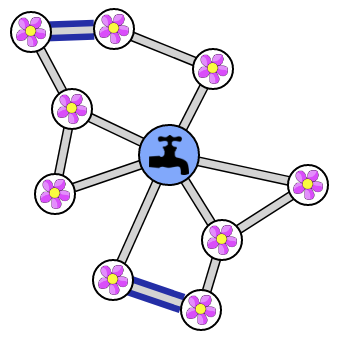
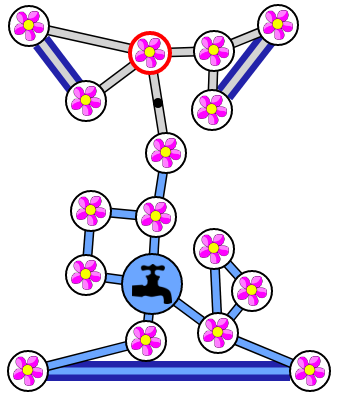
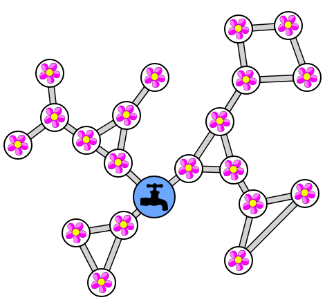
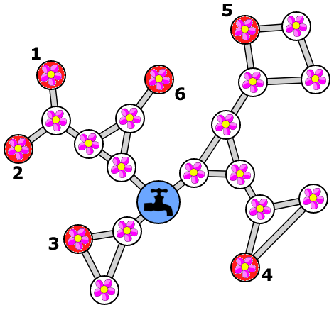
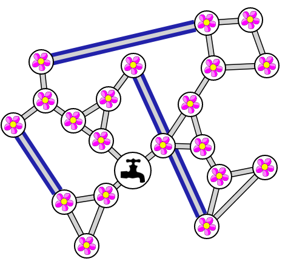

Solution
Il faut relier entre elles les fleurs isolées, c'est-à-dire celles reliées par un seul tuyau. Il y a 4 fleurs isolées, donc 2 tuyaux suffisent. Par exemple :

Il faut relier entre elles les fleurs isolées, c'est-à-dire celles reliées par un seul tuyau. Il y a 6 fleurs isolées, donc a priori 3 tuyaux suffisent. Cependant, certaines configurations des tuyaux ne permettent pas de se protéger contre un tuyau qui se bouche. Par exemple, cette configuration ne convient pas :

Il y a en revanche plusieurs configurations qui conviennent. En voici deux :


La première étape consiste à déplacer les fleurs pour éviter tous les croisements de tuyaux. Cela permet d'y voir plus clair. Par exemple, on peut obtenir :

La seconde étape consiste à déterminer des fleurs "critiques". Tout d'abord, une fleur est critique si elle est relié par un seul tuyau. De plus, on peut aussi avec des groupes de fleurs "critiques", lorsque le groupe de fleurs est relié au reste par un seul tuyau. On est obligé de relier chaque groupe critique par un nouveau tuyau. Pour cela, on va choisir, de manière arbitraire, une fleur dans chaque groupe critique. Au total, on a 6 fleurs "critiques", coloriées en rouge ci-dessous.

A priori, avec 3 tuyaux, il va être possible de relier les 6 fleurs critiques entre elles. Mais attention, il ne faut surtout pas placer l'un des deux tuyaux représentés ci-dessous, sinon il restera des groupes isolés qui pourront être privés d'eau si un tuyau se bouche.

Si l'on évite de placer ces deux tuyaux là, alors toutes les autres configurations donnent une solution valide. En voici une :

C'est de l'informatique !
Ce sujet présente la structure de graphe, très utilisée en informatique, où des objets, représentés par des noeuds sont reliés entre eux, les liens étant représentés par des arêtes entre ces noeuds. Ici les fleurs et le robinet sont les noeuds, et les tuyaux sont les arêtes du graphe.
La question posée dans ce sujet illustre la notion de pont, ou isthme, un concept important de la théorie des graphes. Un pont est une arête telle que si on la supprime, le graphe dont il fait partie se retrouve divisé en deux morceaux, appelées composantes. Ajouter des arêtes pour que le graphe ne contienne plus aucun pont est ce que l'on appelle rendre le graphe 2-arête-connexe.